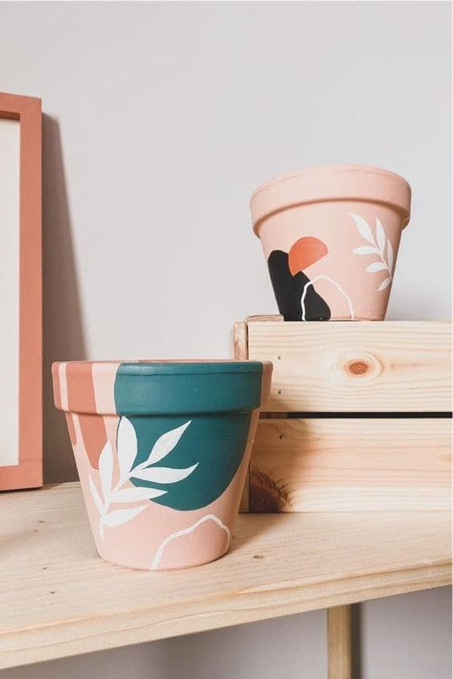

استخدم البشر الأوعية لمدة 100,000 سنة على الأقل، وربما لملايين السنين. ربما كانت أول الحاويات قد اخترعت لتخزين المواد الغذائية، مما يسمح للإنسان في وقت مبكر بالحفاظ على المزيد من الطعام لفترة أطول، أو لحمله بسهولة أكبر، وأيضاً لحمايته من الحيوانات الأخرى. وكان تطوير حاويات تخزين الأغذية ذا أهمية كبيرة لتطور السكان البشر، وكان سلوكاً مبتكراً تماماً لم يسبق رؤيته في الأشياء الرئيسية الأخرى. وربما كانت أولى الحاويات موجودة في الطبيعة كانت مثل القرع المجوف، والتي تم العثور على أمثلة بدائية في ثقافات مختلفة مثل تلك التي كانت عند سكان هاواي الأصليين. وأعقب ذلك سلال منسوجة، وخشب منقوش، وفخار.